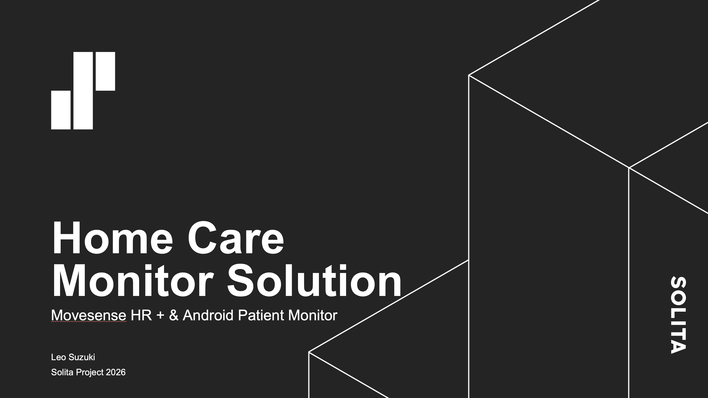
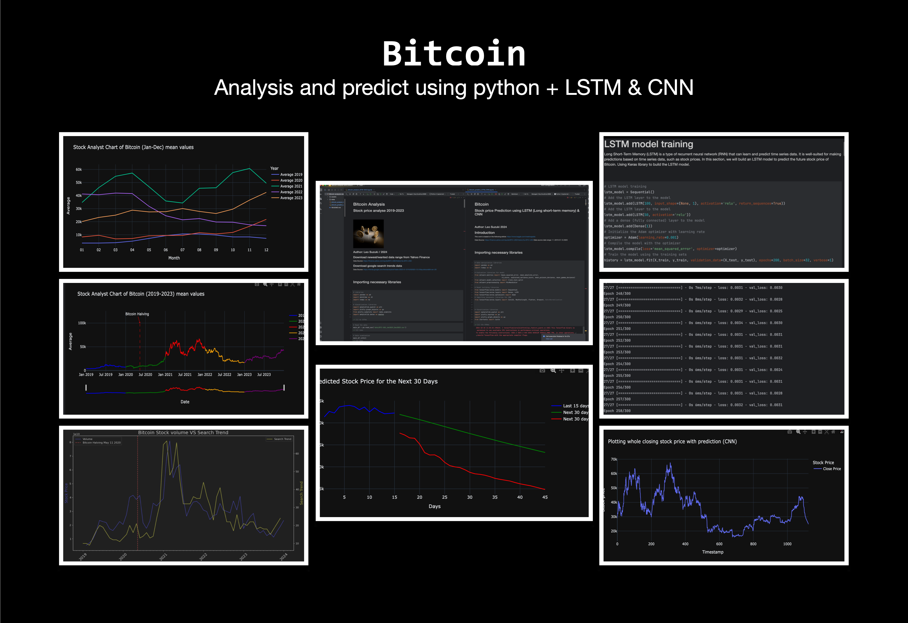

I build across firmware, Android, web and data. Fifteen years as an entrepreneur taught me to take ownership, communicate clearly and turn ideas into useful things.
TPA / SASKY Municipal Education and Training Consortium
Practical ICT training in software development and IT systems. Built games with Unity and C#, and earned the Python MTA certification.
Experience / In practice
Built for actual use.
A developer’s curiosity. An entrepreneur’s sense of ownership.
10/2025 — 05/2026
Solita Oy
Software Developer
Developed Movesense sports tracker firmware and Android player tracking tools. Built a post-operative cardiac monitoring prototype for my bachelor’s thesis using Movesense and Jetpack Compose.
C++KotlinBluetooth LE
05/2024 — 09/2024
Finn Teollisuuspalvelut Oy
Software Developer
Automated Excel worklists, offer calculations and cutting lists with VBA. Created a DXF reader to calculate line lengths for laser-cutting quotes.
PythonVBAAutomation
03/2021 — 12/2021
Beiz Oy
Game Developer
Collaborated on Lola’s Fruit Sudoku in Unity and tested game libraries in Finnish, English and Japanese.
11/2020 — 01/2021
Oy Brunakärrs Energi Ab
Web Developer
Developed the company website and a customer management system to support registration and customer relationships.
05/2004 — 07/2019
Findaco Ltd
Entrepreneur / CEO
Ran the business and its technical operations, including recruitment, training and accounting. Learned to own the whole process, from the first conversation to delivery.
Toolkit / Connections
Across the stack.
The right tool starts with understanding the problem.
Programming
Python, C++, Kotlin, JavaScript, Java, C#, VBA
Web
HTML, CSS, React, REST APIs
Android & devices
Jetpack Compose, Bluetooth LE, Movesense, Arduino
Data
SQL, data visualisation, time-series analysis
Tools & workflow
Git, Docker, Unity, testing, AI-assisted development
✓
Certification
Microsoft Technology Associate
Python programming
Portfolio / Selected work
From idea to interface.
Open a project to see what went into it.

Health technology / Thesis prototypeHome Care Monitor SystemMovesense · Bluetooth LE · Android+
A post-operative cardiac patient monitoring prototype built with Movesense and Android Jetpack Compose. Heart-rate and movement data travel over Bluetooth LE, with history available locally on the device.
Mobile / Native applicationsAndroid projectsJava · Kotlin · Jetpack Compose+
A collection of native Android applications built while learning Java, Kotlin and Jetpack Compose. Hands-on exploration of mobile interfaces and application behaviour.
Reads DXF files and calculates total or detailed line lengths for laser-cutting offer calculations. Developed for Finn Teollisuuspalvelut Oy, which owns the software; the source is not public.
A generative desktop art application made with Python, Turtle, Colorgram and Tkinter. Experiments with colour, circles, dots and random walks turn code into images.
Demo: Art Maker Studio in use.

Data / Machine learningBitcoin analysisPython · LSTM · CNN+
An exploration of time-series analysis and price prediction using LSTM and CNN models on Bitcoin data. A machine-learning project focused on modelling and visualisation.
Hardware / Team projectArduino game consoleC++ · Arduino Nano · Sensors+
A small game console built with a team, combining an Arduino Nano, sensors and custom game logic. A hands-on connection between programming and physical interaction.